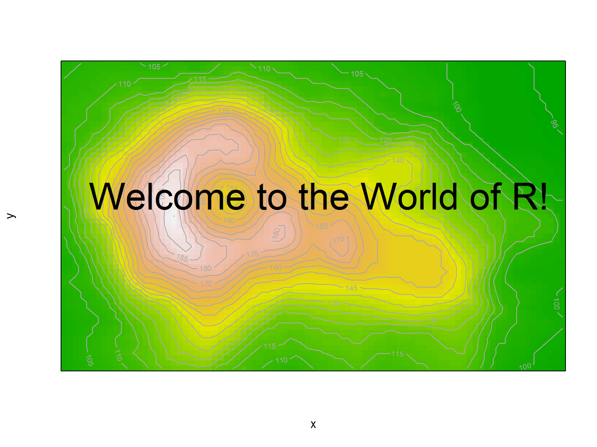
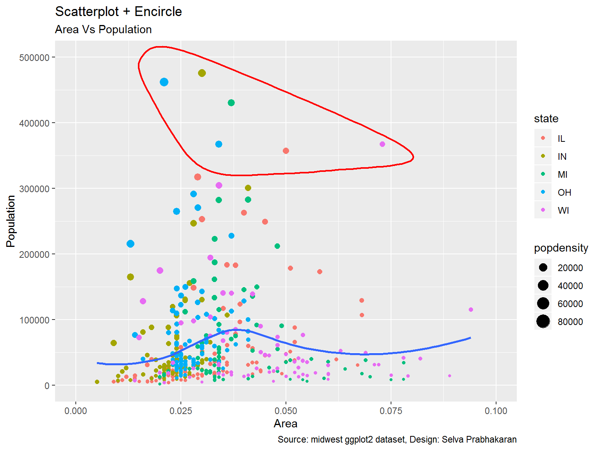
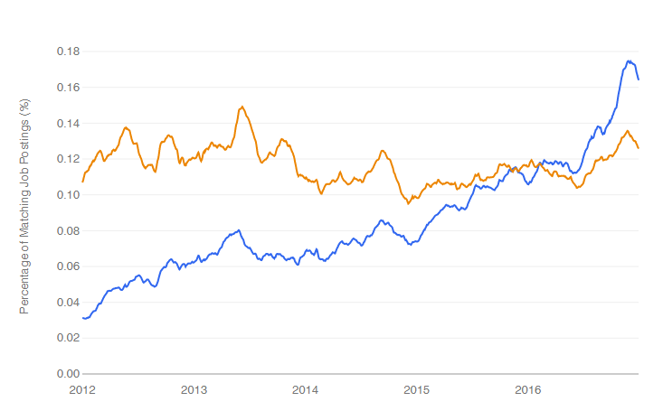
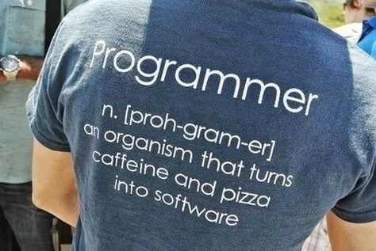
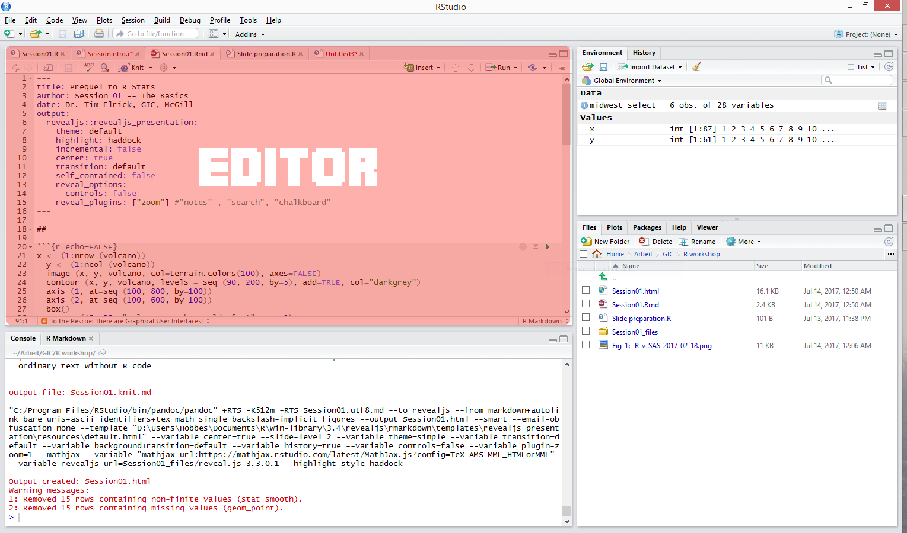
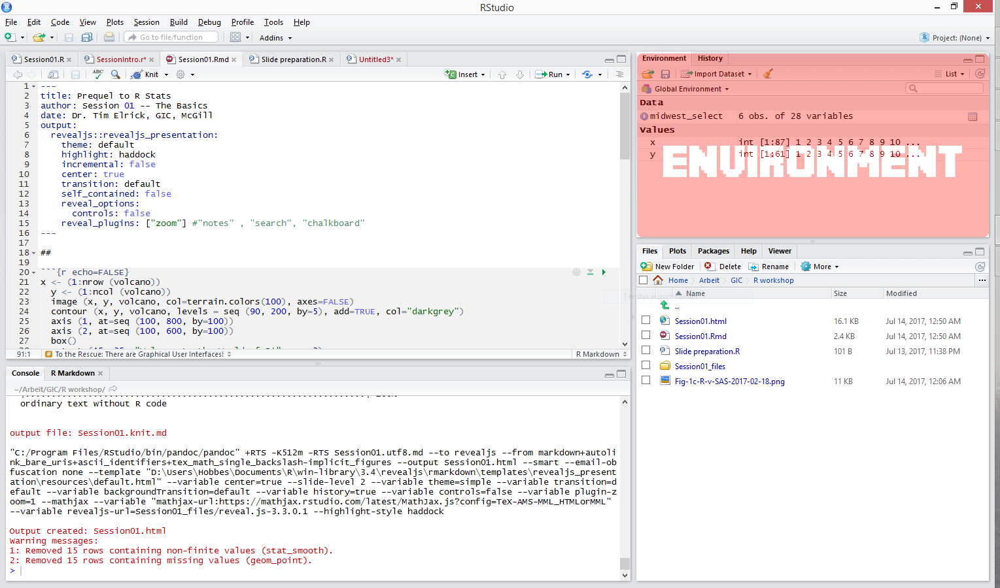
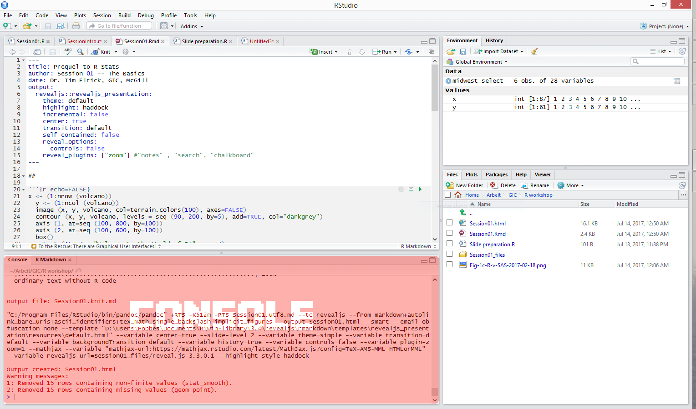
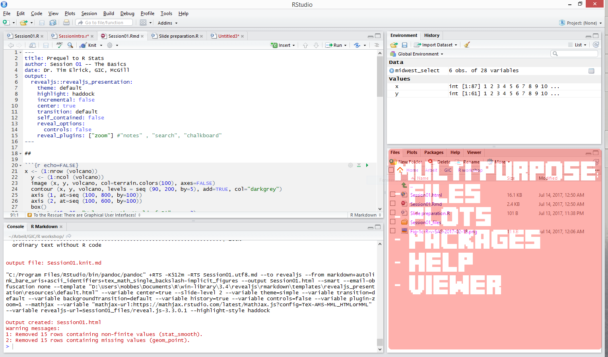

Summer Camp 2019
Summer Camp 2019
 Summer Camp 2019
Summer Camp 2019Geographic Information Centre (GIC), McGill
Dr. Tim Elrick, Mon, Aug 26th, 2019

Easy Number Crunching
## area poptotal popdensity
## Min. :0.00500 Min. : 1701 Min. : 85.05
## 1st Qu.:0.02400 1st Qu.: 18840 1st Qu.: 622.41
## Median :0.03000 Median : 35324 Median : 1156.21
## Mean :0.03317 Mean : 96130 Mean : 3097.74
## 3rd Qu.:0.03800 3rd Qu.: 75651 3rd Qu.: 2330.00
## Max. :0.11000 Max. :5105067 Max. :88018.40Spectacular Graphics

More Reasons for Using R
- R is free and Open Source
- R is OS independent (i.e. works with Windows, Linux and Mac)
- R is super flexible and extensible
- R Scripts help with corrections, repetitions & automatisation
- R is becoming more and more the standard for stats
- R is at the frontier of the development of stats methods
- R has a huge user base and support community
And… Finally, You Want a Job, eh?

Data science job trends for R (blue) and SAS (orange) (http://r4stats.com/articles/popularity/)
So, What’s the Catch?
R is a programming language. It uses a console:
## [1] 4But, there are GUIs!

What you will learn in this summer camp
- How to work with R in RStudio
- How to import (and export) data
- How to clean your data
- How to treat missing values
- How to automate your code
- How to run first stats
- How to visualise your data
- How to communicate your work
- Some tips and tricks
What’s our schedule
| Time | What |
|---|---|
| 09:30 to 11:00 | Session 1 |
| 11:00 to 11:15 | Coffee Break |
| 11:15 to 12:45 | Session 2 |
| 12:45 to 1:45 | Lunch Break |
| 1:45 to 3:15 | Session 3 |
| 3:15 to 3:30 | Coffee Break |
| 3:30 to 4:30 | Optional lab |
Course Outline
- Session 01: The Basic Basics
- Session 02: Functions, Packages & Imports
- Session 03: Indexing & Conditions
- Session 04: Data Cleaning
- Session 05: Data Manipulation
- Session 06: Automation, Data Types
- Session 07: Missing Values & First Stats
- Session 08: Data Visualization I
- Session 09: Data Visualization II
- Session 10: Producing Beautiful Output with R Markdown
- Session 11: LaTeX Math Functions
- Session 12: RStudio Add-Ins & Wrap Up
Let’s start programming

What you will learn today
- How to work with R in RStudio
- How you use variables
- How to calculate and work with vectors
- How to work with matrices
- How to work with tibbles (data frames)
- How to import data
- How to save your work
- How to do very basic stats
- How to write nice code
Before we get our hands dirty…
Let’s create our own dataset:
Go to http://bit.ly/2wlyZ2f (if you have not yet done so) Please fill in one line of data.
You can download the handout at https://tinyurl.com/GIC-workshop
Piece of advice
Don’t be afraid!
Every one of us started from scratch to learn R.
We all made and (still make!) lots (!) of mistakes in our code.
Yes, there is a steep learning curve. So, take your time.
How to succeed in R
Explore! Have faith in yourself!
Trial and error is time-consuming, but one of the best ways to learn R.
Use Google (or go to StackOverflow right away)!
Use the help system in R!
Opening RStudio
.

.

.

.

Now, let’s (finally) start
R uses a console.
> allows you to enter code. Better is to use the editor.
To execute code there, press [Ctrl]+[Enter].
Use # to add a comment.
Comment everything you do!
Exercise 1
What happens if you do not close parentheses?
Assigning
[Alt]+[-] gets you the assignment symbol <-
Objects & Functions
‘Everything is an object,
everything that happens is a functional call.’
(John Chambers, core R development member)
## [1] 2## [1] 3How do I get help in R
? displays the help page for the function.
?? displays a context search for the function.
Exercise 2
- Find out what the function
abs()does.
- What is the difference between
log()andlog10()?
- How do you calculate a logarithm with base 3?
Exercise 3
What other constants exist in R?
Look up letters to find out.
Vectors
An object that only contains one values is also a vector:
## [1] TRUEConsecutive rows are easily generated by using a colon:
## [1] 10 11 12 13 14 15 16 17 18 19 20 21 22 23 24 25 26 27 28 29 30 31 32
## [24] 33 34 35Creating vectors
To create a vector with more than one value you use c() (concatenate)
length() tells you, how many objects a vector contains
## [1] 3Exercise 4
Use class() to find out about the variable type of a.
Try to explain the result.
Exercise 5
Create a virtual die by using a vector. 
Exercise 6
Create a vector for height, shoe size and gender for the first 10 participants.
Use distinctive variable names for each of them.
Which function do you need for creating these vectors?
Exercise 7
Calculate the minimum and maximum value of the participants’ shoe size.
What is the 10th-quantile (Q0.1) and the 90th-quantile (Q0.9)?
What do you do if you don’t know how to solve this question?
Element-wise Execution and Recycling
## [1] 2 6 12## Warning in y + 1:4: longer object length is not a multiple of shorter
## object length## [1] 3 6 13 6Back to objects
R treats everything as an object. We can use this to our advantage!
Demo
Let’s build this mathematical function: \[s=\sqrt{\frac{\sum_{i=1}^N (x_i-\overline{x}_i)^2}{N-1}}\] The standard deviation for samples.
Functions
You can create your own functions by using function().
f <- function (z) { # braces contain the content
z^2 # in this case we square the input
}
f(x) # here we 'call' the function## [1] 4## [1] 9Exercise 8
Rebuild the standard deviation as a stand-alone function, called stdev().
Exercise 9
Build a function that rolls two dice. Use the sample() function for doing so.
Packages
Packages enhance the range of available functions. install.packages("package_name") download a package from the internet onto your computer.
library(package_name) loads a package into your current R environment.
Exercise 10
Prepare your R environment for using functions from the readr package.
Importing data
The readr package allows you to read
- csv files:
read_csv()
- white-spaced tables:
read_table()
- tab separated tables:
read_tsv()
- fixed width tables:
read_fwf()
and more. The haven package reads
- SPSS files:
read_spss()
- Stata files:
read_dta()
- SAS files:
read_sas()
Exercise 11
Download the data you all entered this morning from https://tinyurl.com/GIC-workshop
Import classdata.csv.
Dataframes/Tibbles
A dataframe is a 2-dimensional vector
of different variable types
or
data sets as we usually know them
also called rectangular data.
Exercise 12
You can glimpse() at your dataset.
Describe the dataset: How many variables are in there? Of what class? How many observations?
Matrices
A matrix is a a 2-dimensional vector
of the same variable type.
## [,1] [,2]
## [1,] 1 2
## [2,] 3 4
## [3,] 5 6Exercise 13
Combine the numerical vectors to a matrix that you created this morning.
Do you use rbind() or cbind()? Find out! What is the difference?
More basic functions
summary() gives a summary of a vector or dataframe.
mean() calculate the mean of vector.
which.min() looks for the position of the minimum value.
table() builds a contingency table.
Indexing
Indexing means pointing to one or more values in your dataset:
## [1] 22To index certain values in a matrix or a dataframe you write
Exercise 14
- Find out about the hair length of the 3rd person in the class dataset.
- Display the height of the 10th to 20th person in the class dataset.
- All variables of the last person in the class dataset.
Exercise 15
Find out who is the tallest in class.
No, not by looking around! Use the class dataset.
Exercise 16
Combine the first 3 elements of the vector for shoe size and height that you created in the morning and store the elements in a new vector n.
Saving your work I
To save your code you save
- your script in the editor as a
.Rfile
- your data in the environment as a
.RDatafile
Saving your work II
Use rm() to delete variables you do not need anymore.
Use setwd() to set the path of where you want to save your files, if you do not use RProjects. To separate folders use / instead of \.